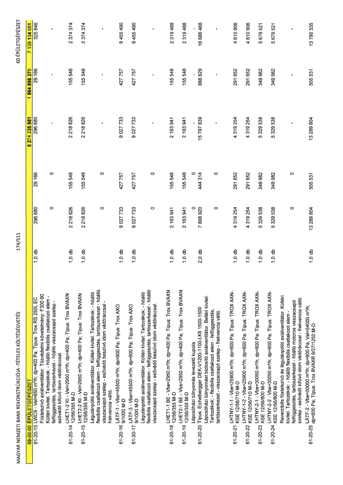

| Tétel | Menny. | Egys. | Anyag e.ár (net HUF) | Díj e.ár (net HUF) | Anyag összesen (net HUF) | Díj összesen (net HUF) | Anyag+Díj összesen (net HUF) |
|---|---|---|---|---|---|---|---|
| 61-20-13 LWC9 - Vel=650 m3/h; dp=400 Pa; Típus: Trox RS 250L EC | 1,0 | db | 296 680 | 29 166 | 296 680 | 29 166 | 325 846 |
| 61-20-14 LHET1-2 KI - Vel=2950 m3/h; dp=400 Pa; Típus: Trox BVAXN 12/56/355 M-D | 1,0 | db | 2 218 826 | 155 548 | 2 218 826 | 155 548 | 2 374 374 |
| 61-20-15 LHET2-2 KI - Vel=2950 m3/h; dp=400 Pa; Típus: Trox BVAXN 12/56/355 M-D | 1,0 | db | 2 218 826 | 155 548 | 2 218 826 | 155 548 | 2 374 374 |
| 61-20-16 LÁTF-1 - Vbe=45500 m3/h; dp=600 Pa; Típus: Trox AXO 9/1000 M-D | 1,0 | db | 9 027 733 | 427 757 | 9 027 733 | 427 757 | 9 455 490 |
| 61-20-17 LÁTF-3 - Vbe=45500 m3/h; dp=600 Pa; Típus: Trox AXO 9/1000 M-D | 1,0 | db | 9 027 733 | 427 757 | 9 027 733 | 427 757 | 9 455 490 |
| 61-20-18 LHET1-1 BE - Vbe=2950 m3/h; dp=400 Pa; Típus: Trox BVAXN 12/56/355 M-D | 1,0 | db | 2 163 941 | 155 548 | 2 163 941 | 155 548 | 2 319 488 |
| 61-20-19 LHET2-1 BE - Vbe=2950 m3/h; dp=400 Pa; Típus: Trox BVAXN 12/56/355 M-D | 1,0 | db | 2 163 941 | 155 548 | 2 163 941 | 155 548 | 2 319 488 |
| 61-20-20 Lépcsőházi túlnyomás levezető kupola - Típus: Eichelberger DEK-V1200-1100-LK6 1500-1500 | 2,0 | db | 7 898 920 | 444 314 | 15 797 839 | 888 629 | 16 686 468 |
| 61-20-21 LHTNY-1-1 - Vbe=25900 m3/h; dp=600 Pa; Típus: TROX AXN-KSE 12/56/710 M-D | 1,0 | db | 4 319 254 | 291 652 | 4 319 254 | 291 652 | 4 610 906 |
| 61-20-22 LHTNY-1-2 - Vbe=25900 m3/h; dp=600 Pa; Típus: TROX AXN-KSE 12/56/710 M-D | 1,0 | db | 4 319 254 | 291 652 | 4 319 254 | 291 652 | 4 610 906 |
| 61-20-23 LHTNY-2-1 - Vbe=30050 m3/h; dp=600 Pa; Típus: TROX AXN-KSE 12/56/800 M-D | 1,0 | db | 5 329 538 | 349 982 | 5 329 538 | 349 982 | 5 679 521 |
| 61-20-24 LHTNY-2-2 - Vbe=30050 m3/h; dp=600 Pa; Típus: TROX AXN-KSE 12/56/800 M-D | 1,0 | db | 5 329 538 | 349 982 | 5 329 538 | 349 982 | 5 679 521 |
| 61-20-25 LÁTF-2 - Vbe=50000 m3/h; dp=600 Pa; Vel=54000 m3/h; dp=600 Pa; Típus: Trox BVAXR 9/27/1250 M-D | 1,0 | db | 13 289 804 | 505 531 | 13 289 804 | 505 531 | 13 795 335 |
